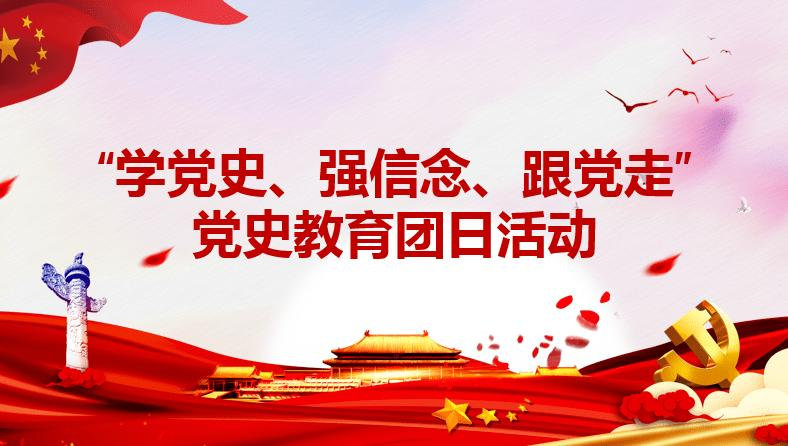

【学党史 强信念 跟党走】
The First
2021年是中国共产党成立100周年，是实施“十四五”规划，开启全面建设社会主义现代化国家新征程的起步之年。
2月20日，党中央召开党史学习教育动员大会，习近平总书记发表重要讲话指出，我们党的一百年，是矢志践行初心使命的一百年，是筚路蓝缕奠基立业的一百年，是创造辉煌开辟未来的一百年。
回望过往的奋斗路，眺望前方的奋进路，必须把党的历史学习好、总结好，把党的成功经验传承好、发扬好。
作为新时代的青年团员，我们要认真践行习近平总书记“发扬为民服务孺子牛、创新发展拓荒牛、艰苦奋斗老黄牛的精神”的号召，把自己的小我融入到人民的大我之中，敢想敢试，坚守初心，让青春年华在为国家、为人民的奉献中熠熠生辉。
历史是最好的教科书，唯有对信仰和历史做到真信，脚步才能行稳致远。为此，我们在空余时间不忘记学习党史，不断从党的百年历史中汲取智慧和力量。 在深入学习党史的过程中，团员们深刻了解到，自觉的学习意识、强大的学习本领、超高的学习能力，正是中国共产党能够从小到大、由弱到强、不断壮大的重要法宝。 扎实的党史学习为青年团员做好新时代好青年奠定了坚实的基础，也为努力成为担当民族复兴大任的时代新人注入了强劲的力量。我们要牢记党的嘱托，继承党的光荣传统，坚定信念“永远跟党走"。 学习党史非常重要，这让我们能够更加客观地看待中国共产党的发展历程，更加坚定未来的发展方向，努力为中国发展作出更大贡献。
作为新时代的青年团员，我们要认真践行习近平总书记“发扬为民服务孺子牛、创新发展拓荒牛、艰苦奋斗老黄牛的精神”的号召，把自己的小我融入到人民的大我之中，敢想敢试，坚守初心，让青春年华在为国家、为人民的奉献中熠熠生辉。
历史是最好的教科书，唯有对信仰和历史做到真信，脚步才能行稳致远。为此，我们在空余时间不忘记学习党史，不断从党的百年历史中汲取智慧和力量。 在深入学习党史的过程中，团员们深刻了解到，自觉的学习意识、强大的学习本领、超高的学习能力，正是中国共产党能够从小到大、由弱到强、不断壮大的重要法宝。 扎实的党史学习为青年团员做好新时代好青年奠定了坚实的基础，也为努力成为担当民族复兴大任的时代新人注入了强劲的力量。我们要牢记党的嘱托，继承党的光荣传统，坚定信念“永远跟党走"。 学习党史非常重要，这让我们能够更加客观地看待中国共产党的发展历程，更加坚定未来的发展方向，努力为中国发展作出更大贡献。
The Second
开展“学党史、强信念、跟党走”学习教育，要坚持以马克思列宁主义、毛泽东思想、邓小平理论、“三个代表”重要思想、科学发展观、习近平新时代中国特色社会主义思想为指导，深入学习贯彻党的十九大和十九届二中、三中、四中、五中全会精神；
深入学习贯彻习总书记在党史学习教育动员大会上的重要讲话精神，紧紧围绕学史明理、学史增信、学史崇德、学史力行，紧密结合共青团工作和团员青年实际，坚持团员自学和支部组织学习相结合，坚持理论学习和实践教育相结合；
教育引导广大团员青年了解党的光辉历史、感悟党的初心使命、领会党的创新理论、体认党的精神谱系、传承党的红色基因，更加自觉地以习近平新时代中国特色社会主义思想武装头脑，进一步增强“四个意识”、坚定“四个自信”、做到“两个维护”， 坚定不移跟党走中国特色社会主义道路，为全面建设社会主义现代化国家、实现中华民族伟大复兴中国梦贡献青春力量。
深入学习贯彻习总书记在党史学习教育动员大会上的重要讲话精神，紧紧围绕学史明理、学史增信、学史崇德、学史力行，紧密结合共青团工作和团员青年实际，坚持团员自学和支部组织学习相结合，坚持理论学习和实践教育相结合；
教育引导广大团员青年了解党的光辉历史、感悟党的初心使命、领会党的创新理论、体认党的精神谱系、传承党的红色基因，更加自觉地以习近平新时代中国特色社会主义思想武装头脑，进一步增强“四个意识”、坚定“四个自信”、做到“两个维护”， 坚定不移跟党走中国特色社会主义道路，为全面建设社会主义现代化国家、实现中华民族伟大复兴中国梦贡献青春力量。

The Third
朝气蓬勃的大党
永葆常青的伟业
——礼敬中国共产党成立100周年
2021年是中国共产党成立100周年。习近平总书记多次指出“中国共产党立志于中华民族千秋伟业，百年恰是风华正茂”；强调“我们党作为百年大党，如何永葆先进性和纯洁性、永葆青春活力，如何永远得到人民拥护和支持，如何实现长期执政，是我们必须回答好、解决好的一个根本性问题。”回顾中国共产党从孕育、诞生到一百年来走过的波澜壮阔历程，可以鲜明看到我们党的生命和事业始终蕴含着虎虎生风的青春脉动、洋溢着勃勃向上的青春朝气。这种发之于内、形之于外的蓬勃朝气，使中国共产党和党领导的事业生生不息、历久弥新、风采永盛。我们要为党做好新时代青年工作，让青春成为党领导的千秋伟业中生气勃发、高歌猛进的持久风景。
中国共产党的创始人之一李大钊同志说过，“青年者，人生之王，人生之春，人生之华也。青年之字典，无‘困难’之字，青年之口头，无‘障碍’之语；惟知跃进，惟知雄飞，惟知本其自由之精神，奇僻之思想，锐敏之直觉，活泼之生命，以创造环境，征服历史。”青春的这些突出特性，使得青年往往与革命理论、革命政党、革命运动，在根子上紧密相连、在灵魂上息息相通。历史上，马克思主义理论、马克思主义政党的诞生，总是与青年、青年运动有着深深的不解之缘。
1835年，17岁的马克思在高中毕业作文《青年在选择职业时的考虑》中宣示了“为人类幸福而献身”的价值追求，这也构成了马克思所有观点和理论的思想原点、价值主线。1848年，30岁的马克思、28岁的恩格斯联合发表了《共产党宣言》，宣告了马克思主义的诞生，为世界上第一个无产阶级政党——共产主义者同盟及之后的所有马克思主义政党提供了科学的思想指导和行动纲领。
1887年，17岁的列宁在喀山大学参加学生运动，被捕并被流放。之后，年轻的列宁在学习宣传阐释马克思主义、推动建立无产阶级革命政党、开展工人阶级革命等一系列理论研究、实践活动和斗争考验中，成长为坚定的马克思主义者、无产阶级革命家，1917年他领导俄国十月革命取得胜利，开辟了人类历史的新纪元。
在中国，从1915年开始的新文化运动到1919年五四运动，先进的青年知识分子对于推动思想解放、推动中华民族觉醒，对于促进马克思主义在中国的传播、促进马克思主义同中国工人运动的结合，起到了“急先锋”的作用。在五四运动准备的思想条件、干部条件基础上，1921年7月，中国共产党诞生，成为中华民族发展史上“开天辟地的大事变”。参加中国共产党一大的代表，平均年龄28岁。
新文化运动的主阵地《新青年》杂志发刊词《敬告青年》一文开宗明义提出：“青年之于社会，犹新鲜活泼细胞之在人身。”无数人向往、讴歌、怀念的青春，与马克思主义一样，在本质上都是向上的、革命的、日新的。五四运动注入的青春基因和马克思主义思想基因，让中国共产党的生命始终充盈着浓浓的青春特质、彰显着蓬勃的青春活力。
青春最富有抱负，中国共产党正是理想远大、信念坚定的党。中国共产党是应拯救国家、挽救民族、解救人民于水火的历史需要而诞生的马克思主义政党，一经成立就把实现共产主义作为自己的最高理想和最终目标，义无反顾肩负起实现中华民族伟大复兴的历史使命。一百年来，无论是弱小还是强大，无论是顺境还是逆境，我们党都初心不改、矢志不渝，以“理想高于天、信念坚如磐”引领民族复兴航船乘风破浪、扬帆远航。“砍头不要紧，只要主义真”；“敌人只能砍下我们的头颅，决不能动摇我们的信仰”；“宁可少活二十年，拼命也要拿下大油田”；“把有限的生命，投入到无限的为人民服务中去”；“与人民同甘苦，共命运”；“坚定中国特色社会主义道路自信、理论自信、制度自信、文化自信”……一代代共产党人的崇高信仰和坚定信念，如同熊熊燃烧的火炬，指明了前进方向，驱除了奋进途中一切恐惧、阴霾、犹豫和徘徊，支撑着党和人民为实现伟大目标流血咬牙奋斗到底。今天，经过全党主题教育，“不忘初心、牢记使命”的信条，更加深深地印刻在每一个共产党人的心中。
青春最无畏失去，中国共产党正是立党为公、执政为民的党。人的自由全面发展是马克思主义的根本价值追求，人民立场是中国共产党的根本政治立场。中国共产党自成立以来，始终坚持人民至上，始终与人民心连心、同呼吸、共命运，全心全意以人民为江山，不惜牺牲一切为人民打江山、建江山。在大革命、土地革命、抗日战争、解放战争中，在抗美援朝等卫国战争中，无数共产党员、共青团员、人民子弟兵为了建立新中国、保卫新中国，冲锋陷阵、血洒疆场；在社会主义建设时期和改革开放以来的我国各行各业，在各个时期抗击洪水、抗震救灾、抗击严重疫情等重大斗争面前，鲜艳的党旗总是飘扬在最前线，共产党人总是吃苦在前、团结带领群众忘我奋战。在中国特色社会主义新时代，“人民对美好生活的向往，就是我们的奋斗目标”的执政理念、以人民为中心的发展思想深入贯彻，我国脱贫攻坚战取得全面胜利，决胜全面建成小康社会取得决定性成就，人民群众的获得感、幸福感、安全感不断增强。一百年来，“为人民而生，因人民而兴，始终同人民在一起，为人民利益而奋斗，是我们党立党兴党强党的根本出发点和落脚点”，党也由此得到了全国各族人民最发自内心的热爱、最广泛的拥护和最全力的支持。
青春最勇往直前，中国共产党正是不惧险阻、敢于斗争的党。共产主义、社会主义事业是全人类最崇高的事业，也由此是最艰难困苦的事业。从一个半殖民地半封建的旧中国走来，要推翻压在中国人民头上沉重而凶恶的“三座大山”；在一个过去久经战乱、底子一穷二白的新中国，要恢复国民经济、建立独立的比较完整的工业体系和国民经济体系；在一个拥有十亿以上人口规模的世界上最大发展中国家进行改革开放，要消除绝对贫困、全面建成小康社会、全面推进社会主义现代化建设；在一个长期“西强东弱”、长期面临国外敌对势力破坏遏制风险的世界格局下，要突围崛起、推动和平发展和民族振兴，所有这一切，无不让中国共产党面对着千重山、万重险。“革命不是请客吃饭”，“为有牺牲多壮志，敢教日月换新天”，“中华民族伟大复兴，绝不是轻轻松松、敲锣打鼓就能实现的”，“进行具有许多新的历史特点的伟大斗争”……中国共产党人始终对前进道路上的各种风险挑战保持清醒认知、坚决勇敢应对。一百年来，无论是革命战场的枪林弹雨，还是反革命屠杀的腥风血雨；无论是向大厂大山大漠大江进军的经济建设，还是向科学技术广度和深度进军的创新发展；无论是我国社会主义事业出现重大曲折，还是国际共产主义运动陷入低潮； 无论是面对帝国主义的核讹诈、军事挑衅，还是面对西方强国的战略围堵、科技封锁；无论是二万五千里长征途中的危机重重，还是新时代长征路上的征程漫漫，中国共产党人总是以不畏强敌、不惧风险、敢于斗争、勇于胜利的风骨和品质，以革命加拼命的强大精神，去直面困难、迎接挑战、战胜风险，铸就了苦难辉煌。尤其是党的十八大以来，面对国际、国内前所未有的复杂形势和严峻挑战，以习近平同志为核心的党中央以巨大的政治勇气和责任担当，解决了许多长期想解决而没有解决的难题，办成了许多过去想办而没有办成的大事，推动党和国家事业取得历史性成就、发生历史性变革，让我国综合国力和国际地位前所未有提升、日益走近世界舞台中央。
青春最敢于尝试，中国共产党正是与时俱进、勇于创新的党。人类文明进程中，马克思主义政党、社会主义事业是新生力量。新生事物的成长，更需要打破历史惯性、克服路径依赖，积极尝试新办法、探索新经验。马克思、恩格斯强调，在唯物辩证法面前“不存在任何最终的东西、绝对的东西、神圣的东西”；马克思主义原理的运用“随时随地都要以当时的历史条件为转移。”一百年来，中国共产党坚持解放思想和实事求是相统一、培元固本和守正创新相统一，在各个历史时期都十分注重把马克思主义中国化，十分注重根据中国国情探索创造、走出具有中国特点的自己的路。从毛泽东思想到邓小平理论、“三个代表”重要思想、科学发展观，再到习近平新时代中国特色社会主义思想，中国共产党不断开辟了马克思主义中国化的新境界，为党和人民事业发展提供了科学理论指导；从“农村包围城市”的革命道路，“和平过渡”、“和平赎买”、“和平转变”的社会主义改造道路，到改革开放以来的中国特色社会主义道路，中国共产党开辟的道路总是能够高度契合中国国情、充分体现中国智慧、不断创造中国伟绩。党的十八大以来，理论创新、实践创新、制度创新以及其他各方面创新以空前的广度深度力度拓展深化，创新成为新发展理念之首，新时代中国特色社会主义事业不断迈上发展新台阶。
青春最需要反思，中国共产党正是自我革命、修正错误的党。在出现问题、解决问题中前进，是事物矛盾运动的基本法则；有错必纠，是马克思主义实事求是思想精髓的基本体现。列宁指出：“公开承认错误，揭露犯错误的原因，分析产生错误的环境，仔细讨论改正错误的方法——这才是一个郑重的党的标志”，中国共产党正是这样的“郑重的党”。革命时期的“右倾机会主义”、“左倾盲动主义”、“左倾冒险主义”、“左倾教条主义”，建设时期的“反右扩大化”、“大跃进”、“人民公社化运动”、“文化大革命”，这些都曾让我们党的事业产生巨大危害、付出沉重代价，但所有这些重大失误、错误，我们党都是依靠自己的力量进行纠正、加以解决，最终实现从挫折中奋起。党的每一次坚持真理、修正错误、吸取教训，都让党自身更加成熟、走向强大，我们党也由此创造出了整风、整党、全党集中性学习教育等一系列加强党的建设的丰富经验，成为党的事业取得成功的重要法宝。在改革开放历史新时期，面对“四大考验”、“四大危险”，中国共产党把解决党的问题摆在突出位置，奋力推进党的建设新的伟大工程。党的十八大以来，以习近平同志为核心的党中央“保持赶考的清醒和坚定”，强调“在推动社会革命的同时进行彻底的自我革命”， 坚决推进全面从严治党，坚决改变管党治党宽松软状况，果断顽强夺取了反腐败斗争压倒性胜利，持之以恒反“四风”，使党在革命性锻造中更加坚强，焕发出新的强大生机活力。
习近平总书记强调，“青年工作，抓住的是当下，传承的是根脉，面向的是未来，攸关党和国家前途命运。”共青团胸怀“国之大者”，就是要把为党育人的工作做好。各级团组织要高举习近平新时代中国特色社会主义思想伟大旗帜，全面深入贯彻习近平总书记关于青年工作的重要思想，全面深入贯彻习近平总书记关于少年儿童和少先队工作的重要论述精神，努力把广大青少年培养成为德智体美劳全面发展的社会主义建设者和接班人。要着眼于培根铸魂，持之以恒抓好青年理论武装、青少年爱国主义教育、社会主义核心价值观培育践行、共青团网络舆论引导等工作，引导青年自觉听党话跟党走、坚定理想信念。当前，要把青少年党史教育作为一项突出工作，认真贯彻习近平总书记在党史学习教育动员大会上的重要讲话精神，认真落实《关于在全党开展党史学习教育的通知》要求，在广大青少年中深入开展“学党史、强信念、跟党走”学习教育，引导青少年认真学习了解掌握党史知识，深入思考领悟把握党的一百年历史中贯穿的大逻辑、大道理、大趋势，自觉传承红色基因，不断增强“四个自信”，忠实传承党的光荣传统和优良作风，努力做到“学史明理、学史增信、学史崇德、学史力行”，勇做担当民族复兴大任的时代新人。 要全面深入贯彻《中共中央关于全面加强新时代少先队工作的意见》，强化对少年儿童的政治启蒙和价值观塑造，增强少先队员光荣感，引导少年儿童时刻准备着为共产主义事业而奋斗，确保红色基因代代相传、红色江山光辉永耀。
“进前而勿顾后，背黑暗而向光明，为世界进文明，为人类造幸福，以青春之我，创建青春之家庭，青春之国家，青春之民族，青春之人类，青春之地球，青春之宇宙，资以乐其无涯之生” ，这既是“革命人永远是年轻”的写照，也是保持革命理想、革命精神、革命气魄的中国共产党和党领导的伟业“永远是年轻”的写照！
转载自 | 共青团中央
永葆常青的伟业
——礼敬中国共产党成立100周年
2021年是中国共产党成立100周年。习近平总书记多次指出“中国共产党立志于中华民族千秋伟业，百年恰是风华正茂”；强调“我们党作为百年大党，如何永葆先进性和纯洁性、永葆青春活力，如何永远得到人民拥护和支持，如何实现长期执政，是我们必须回答好、解决好的一个根本性问题。”回顾中国共产党从孕育、诞生到一百年来走过的波澜壮阔历程，可以鲜明看到我们党的生命和事业始终蕴含着虎虎生风的青春脉动、洋溢着勃勃向上的青春朝气。这种发之于内、形之于外的蓬勃朝气，使中国共产党和党领导的事业生生不息、历久弥新、风采永盛。我们要为党做好新时代青年工作，让青春成为党领导的千秋伟业中生气勃发、高歌猛进的持久风景。
一、中国共产党生命中的青春特质
中国共产党的创始人之一李大钊同志说过，“青年者，人生之王，人生之春，人生之华也。青年之字典，无‘困难’之字，青年之口头，无‘障碍’之语；惟知跃进，惟知雄飞，惟知本其自由之精神，奇僻之思想，锐敏之直觉，活泼之生命，以创造环境，征服历史。”青春的这些突出特性，使得青年往往与革命理论、革命政党、革命运动，在根子上紧密相连、在灵魂上息息相通。历史上，马克思主义理论、马克思主义政党的诞生，总是与青年、青年运动有着深深的不解之缘。
1835年，17岁的马克思在高中毕业作文《青年在选择职业时的考虑》中宣示了“为人类幸福而献身”的价值追求，这也构成了马克思所有观点和理论的思想原点、价值主线。1848年，30岁的马克思、28岁的恩格斯联合发表了《共产党宣言》，宣告了马克思主义的诞生，为世界上第一个无产阶级政党——共产主义者同盟及之后的所有马克思主义政党提供了科学的思想指导和行动纲领。
1887年，17岁的列宁在喀山大学参加学生运动，被捕并被流放。之后，年轻的列宁在学习宣传阐释马克思主义、推动建立无产阶级革命政党、开展工人阶级革命等一系列理论研究、实践活动和斗争考验中，成长为坚定的马克思主义者、无产阶级革命家，1917年他领导俄国十月革命取得胜利，开辟了人类历史的新纪元。
在中国，从1915年开始的新文化运动到1919年五四运动，先进的青年知识分子对于推动思想解放、推动中华民族觉醒，对于促进马克思主义在中国的传播、促进马克思主义同中国工人运动的结合，起到了“急先锋”的作用。在五四运动准备的思想条件、干部条件基础上，1921年7月，中国共产党诞生，成为中华民族发展史上“开天辟地的大事变”。参加中国共产党一大的代表，平均年龄28岁。
新文化运动的主阵地《新青年》杂志发刊词《敬告青年》一文开宗明义提出：“青年之于社会，犹新鲜活泼细胞之在人身。”无数人向往、讴歌、怀念的青春，与马克思主义一样，在本质上都是向上的、革命的、日新的。五四运动注入的青春基因和马克思主义思想基因，让中国共产党的生命始终充盈着浓浓的青春特质、彰显着蓬勃的青春活力。
青春最富有抱负，中国共产党正是理想远大、信念坚定的党。中国共产党是应拯救国家、挽救民族、解救人民于水火的历史需要而诞生的马克思主义政党，一经成立就把实现共产主义作为自己的最高理想和最终目标，义无反顾肩负起实现中华民族伟大复兴的历史使命。一百年来，无论是弱小还是强大，无论是顺境还是逆境，我们党都初心不改、矢志不渝，以“理想高于天、信念坚如磐”引领民族复兴航船乘风破浪、扬帆远航。“砍头不要紧，只要主义真”；“敌人只能砍下我们的头颅，决不能动摇我们的信仰”；“宁可少活二十年，拼命也要拿下大油田”；“把有限的生命，投入到无限的为人民服务中去”；“与人民同甘苦，共命运”；“坚定中国特色社会主义道路自信、理论自信、制度自信、文化自信”……一代代共产党人的崇高信仰和坚定信念，如同熊熊燃烧的火炬，指明了前进方向，驱除了奋进途中一切恐惧、阴霾、犹豫和徘徊，支撑着党和人民为实现伟大目标流血咬牙奋斗到底。今天，经过全党主题教育，“不忘初心、牢记使命”的信条，更加深深地印刻在每一个共产党人的心中。
青春最无畏失去，中国共产党正是立党为公、执政为民的党。人的自由全面发展是马克思主义的根本价值追求，人民立场是中国共产党的根本政治立场。中国共产党自成立以来，始终坚持人民至上，始终与人民心连心、同呼吸、共命运，全心全意以人民为江山，不惜牺牲一切为人民打江山、建江山。在大革命、土地革命、抗日战争、解放战争中，在抗美援朝等卫国战争中，无数共产党员、共青团员、人民子弟兵为了建立新中国、保卫新中国，冲锋陷阵、血洒疆场；在社会主义建设时期和改革开放以来的我国各行各业，在各个时期抗击洪水、抗震救灾、抗击严重疫情等重大斗争面前，鲜艳的党旗总是飘扬在最前线，共产党人总是吃苦在前、团结带领群众忘我奋战。在中国特色社会主义新时代，“人民对美好生活的向往，就是我们的奋斗目标”的执政理念、以人民为中心的发展思想深入贯彻，我国脱贫攻坚战取得全面胜利，决胜全面建成小康社会取得决定性成就，人民群众的获得感、幸福感、安全感不断增强。一百年来，“为人民而生，因人民而兴，始终同人民在一起，为人民利益而奋斗，是我们党立党兴党强党的根本出发点和落脚点”，党也由此得到了全国各族人民最发自内心的热爱、最广泛的拥护和最全力的支持。
青春最勇往直前，中国共产党正是不惧险阻、敢于斗争的党。共产主义、社会主义事业是全人类最崇高的事业，也由此是最艰难困苦的事业。从一个半殖民地半封建的旧中国走来，要推翻压在中国人民头上沉重而凶恶的“三座大山”；在一个过去久经战乱、底子一穷二白的新中国，要恢复国民经济、建立独立的比较完整的工业体系和国民经济体系；在一个拥有十亿以上人口规模的世界上最大发展中国家进行改革开放，要消除绝对贫困、全面建成小康社会、全面推进社会主义现代化建设；在一个长期“西强东弱”、长期面临国外敌对势力破坏遏制风险的世界格局下，要突围崛起、推动和平发展和民族振兴，所有这一切，无不让中国共产党面对着千重山、万重险。“革命不是请客吃饭”，“为有牺牲多壮志，敢教日月换新天”，“中华民族伟大复兴，绝不是轻轻松松、敲锣打鼓就能实现的”，“进行具有许多新的历史特点的伟大斗争”……中国共产党人始终对前进道路上的各种风险挑战保持清醒认知、坚决勇敢应对。一百年来，无论是革命战场的枪林弹雨，还是反革命屠杀的腥风血雨；无论是向大厂大山大漠大江进军的经济建设，还是向科学技术广度和深度进军的创新发展；无论是我国社会主义事业出现重大曲折，还是国际共产主义运动陷入低潮； 无论是面对帝国主义的核讹诈、军事挑衅，还是面对西方强国的战略围堵、科技封锁；无论是二万五千里长征途中的危机重重，还是新时代长征路上的征程漫漫，中国共产党人总是以不畏强敌、不惧风险、敢于斗争、勇于胜利的风骨和品质，以革命加拼命的强大精神，去直面困难、迎接挑战、战胜风险，铸就了苦难辉煌。尤其是党的十八大以来，面对国际、国内前所未有的复杂形势和严峻挑战，以习近平同志为核心的党中央以巨大的政治勇气和责任担当，解决了许多长期想解决而没有解决的难题，办成了许多过去想办而没有办成的大事，推动党和国家事业取得历史性成就、发生历史性变革，让我国综合国力和国际地位前所未有提升、日益走近世界舞台中央。
青春最敢于尝试，中国共产党正是与时俱进、勇于创新的党。人类文明进程中，马克思主义政党、社会主义事业是新生力量。新生事物的成长，更需要打破历史惯性、克服路径依赖，积极尝试新办法、探索新经验。马克思、恩格斯强调，在唯物辩证法面前“不存在任何最终的东西、绝对的东西、神圣的东西”；马克思主义原理的运用“随时随地都要以当时的历史条件为转移。”一百年来，中国共产党坚持解放思想和实事求是相统一、培元固本和守正创新相统一，在各个历史时期都十分注重把马克思主义中国化，十分注重根据中国国情探索创造、走出具有中国特点的自己的路。从毛泽东思想到邓小平理论、“三个代表”重要思想、科学发展观，再到习近平新时代中国特色社会主义思想，中国共产党不断开辟了马克思主义中国化的新境界，为党和人民事业发展提供了科学理论指导；从“农村包围城市”的革命道路，“和平过渡”、“和平赎买”、“和平转变”的社会主义改造道路，到改革开放以来的中国特色社会主义道路，中国共产党开辟的道路总是能够高度契合中国国情、充分体现中国智慧、不断创造中国伟绩。党的十八大以来，理论创新、实践创新、制度创新以及其他各方面创新以空前的广度深度力度拓展深化，创新成为新发展理念之首，新时代中国特色社会主义事业不断迈上发展新台阶。
青春最需要反思，中国共产党正是自我革命、修正错误的党。在出现问题、解决问题中前进，是事物矛盾运动的基本法则；有错必纠，是马克思主义实事求是思想精髓的基本体现。列宁指出：“公开承认错误，揭露犯错误的原因，分析产生错误的环境，仔细讨论改正错误的方法——这才是一个郑重的党的标志”，中国共产党正是这样的“郑重的党”。革命时期的“右倾机会主义”、“左倾盲动主义”、“左倾冒险主义”、“左倾教条主义”，建设时期的“反右扩大化”、“大跃进”、“人民公社化运动”、“文化大革命”，这些都曾让我们党的事业产生巨大危害、付出沉重代价，但所有这些重大失误、错误，我们党都是依靠自己的力量进行纠正、加以解决，最终实现从挫折中奋起。党的每一次坚持真理、修正错误、吸取教训，都让党自身更加成熟、走向强大，我们党也由此创造出了整风、整党、全党集中性学习教育等一系列加强党的建设的丰富经验，成为党的事业取得成功的重要法宝。在改革开放历史新时期，面对“四大考验”、“四大危险”，中国共产党把解决党的问题摆在突出位置，奋力推进党的建设新的伟大工程。党的十八大以来，以习近平同志为核心的党中央“保持赶考的清醒和坚定”，强调“在推动社会革命的同时进行彻底的自我革命”， 坚决推进全面从严治党，坚决改变管党治党宽松软状况，果断顽强夺取了反腐败斗争压倒性胜利，持之以恒反“四风”，使党在革命性锻造中更加坚强，焕发出新的强大生机活力。
二.大力为党培养时代新人
习近平总书记强调，“青年工作，抓住的是当下，传承的是根脉，面向的是未来，攸关党和国家前途命运。”共青团胸怀“国之大者”，就是要把为党育人的工作做好。各级团组织要高举习近平新时代中国特色社会主义思想伟大旗帜，全面深入贯彻习近平总书记关于青年工作的重要思想，全面深入贯彻习近平总书记关于少年儿童和少先队工作的重要论述精神，努力把广大青少年培养成为德智体美劳全面发展的社会主义建设者和接班人。要着眼于培根铸魂，持之以恒抓好青年理论武装、青少年爱国主义教育、社会主义核心价值观培育践行、共青团网络舆论引导等工作，引导青年自觉听党话跟党走、坚定理想信念。当前，要把青少年党史教育作为一项突出工作，认真贯彻习近平总书记在党史学习教育动员大会上的重要讲话精神，认真落实《关于在全党开展党史学习教育的通知》要求，在广大青少年中深入开展“学党史、强信念、跟党走”学习教育，引导青少年认真学习了解掌握党史知识，深入思考领悟把握党的一百年历史中贯穿的大逻辑、大道理、大趋势，自觉传承红色基因，不断增强“四个自信”，忠实传承党的光荣传统和优良作风，努力做到“学史明理、学史增信、学史崇德、学史力行”，勇做担当民族复兴大任的时代新人。 要全面深入贯彻《中共中央关于全面加强新时代少先队工作的意见》，强化对少年儿童的政治启蒙和价值观塑造，增强少先队员光荣感，引导少年儿童时刻准备着为共产主义事业而奋斗，确保红色基因代代相传、红色江山光辉永耀。
“进前而勿顾后，背黑暗而向光明，为世界进文明，为人类造幸福，以青春之我，创建青春之家庭，青春之国家，青春之民族，青春之人类，青春之地球，青春之宇宙，资以乐其无涯之生” ，这既是“革命人永远是年轻”的写照，也是保持革命理想、革命精神、革命气魄的中国共产党和党领导的伟业“永远是年轻”的写照！
转载自 | 共青团中央